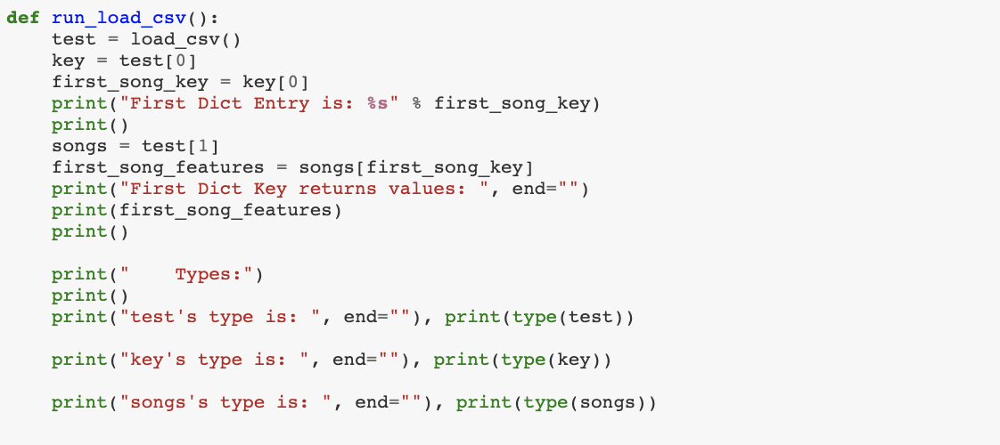
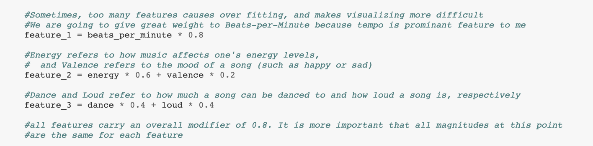
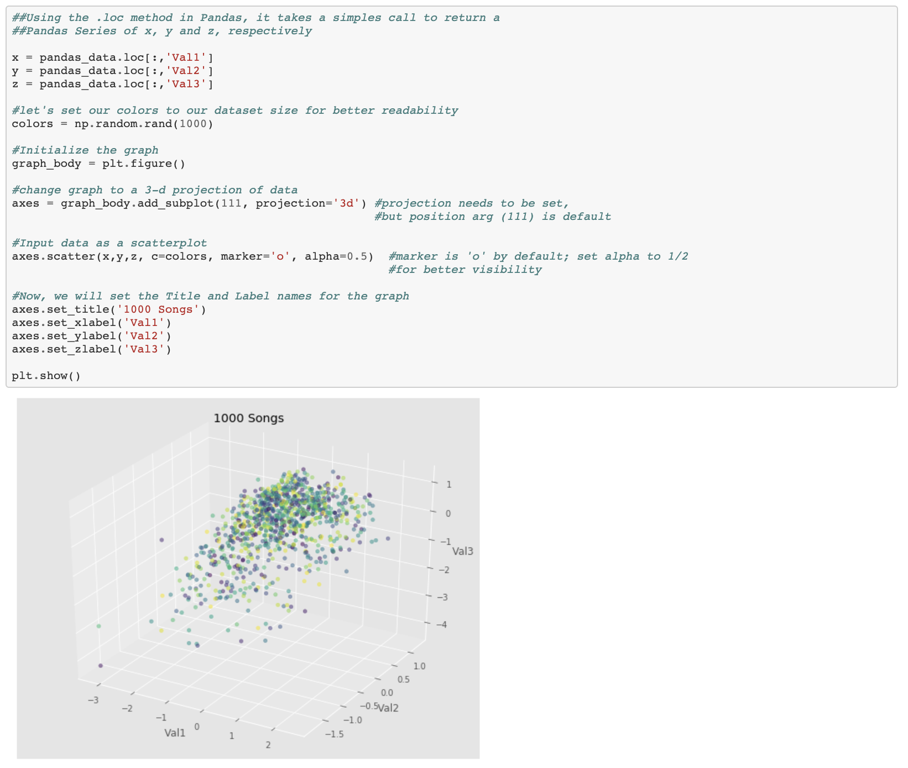
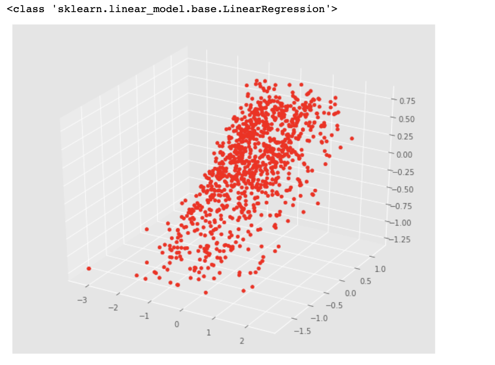

Analyzing Song Data: A Jupyter Tutorial
During my time as an undergraduate, I was fortunate to study under Zico Kolter, Associate Professor in the Computer Science Department at Carnegie Mellon University, who focuses on machine learning, optimization, and control. Using Jupyter Notebook, I create a tutorial that introduces the basic methods in gathering, processing, and interpreting song data from a csv file.
In the tutorial, I show how to install all needed dependencies--a term for needed libraries, which in this case enables us to more powerfully interpret and manipulate data. By installing the Ananconda, coined "the birthplace of python datascience," we are more able to processing and visualize our dataset. I use sortyourmusic, a Spotify API application that converts a playlist of songs into dataset of songs, where each song has the following features: Beats-per-minute (BPM), Energy, Dance, Loud, Valence. The collection of these features creates a unique 'fingerprint' for each song.

After taking this data, normalizing the values and converting the data format into CSV, we have values ranging from -1 to 1 for the majority of values. Some feature values that are outside this range occur because they are outliers, and can be called strange when compared to other values for that feature. For example, the BPM for "Pure Water (with Migos)" is 2.96, even though most other values fall into the range of -1.0 to 1.0.

Now, we need to take the CSV file and format into something more useable for out purposes. We do this by writing a simple function that creates a dictionary and inputs each line of the CSV (each line is one song and all its values), where the song name is one dictionary key and its dictionary value is an array containing all that song's feature values. The print statements are not necessary, but help ensure we have done things correctly as well as visualizing the new format of our data.
Next, we add weights and combine features to better capture the differing importance of certain features. For example, BPM influences a song moreso that valence, therefore BPM has a weight value of 0.8, while valence has a weight of 0.2.
Now that we have our well-formatted dictionary, we need to convert it to a Pandas Dataframe for its useful properties. In a pandas dataframe, it is much easier and efficient to retrieve specific information, such as storing the BPM values for ALL songs into one variable, called X. Once we also do this for Y and Z, we can utilize x, y, and z as our 3 axes, and visualize our data.
From here, we are able to use linear regression, another one of the libraries we have through Anaconda, to see if there is some sort of discernible trend in our music taste.
In the notebook tutorial, we delve deeper into each aspect, from collecting the data and preprocessing, to converting into a Pandas DataFrame, to visualization. Take into account this tutorial uses 1000 songs from my personal library, meaning results will differ with changes in the dataset. The button below to view the full notebook, which includes full walkthrough and the entire code.
In the tutorial, I show how to install all needed dependencies--a term for needed libraries, which in this case enables us to more powerfully interpret and manipulate data. By installing the Ananconda, coined "the birthplace of python datascience," we are more able to processing and visualize our dataset. I use sortyourmusic, a Spotify API application that converts a playlist of songs into dataset of songs, where each song has the following features: Beats-per-minute (BPM), Energy, Dance, Loud, Valence. The collection of these features creates a unique 'fingerprint' for each song.
Example of SortYourMusic Output
After taking this data, normalizing the values and converting the data format into CSV, we have values ranging from -1 to 1 for the majority of values. Some feature values that are outside this range occur because they are outliers, and can be called strange when compared to other values for that feature. For example, the BPM for "Pure Water (with Migos)" is 2.96, even though most other values fall into the range of -1.0 to 1.0.
Example of Normalized Dataset
Now, we need to take the CSV file and format into something more useable for out purposes. We do this by writing a simple function that creates a dictionary and inputs each line of the CSV (each line is one song and all its values), where the song name is one dictionary key and its dictionary value is an array containing all that song's feature values. The print statements are not necessary, but help ensure we have done things correctly as well as visualizing the new format of our data.
Convert CSV to Dictionary: load_csv Function
Next, we add weights and combine features to better capture the differing importance of certain features. For example, BPM influences a song moreso that valence, therefore BPM has a weight value of 0.8, while valence has a weight of 0.2.
Partial Code for Combining Features
Now that we have our well-formatted dictionary, we need to convert it to a Pandas Dataframe for its useful properties. In a pandas dataframe, it is much easier and efficient to retrieve specific information, such as storing the BPM values for ALL songs into one variable, called X. Once we also do this for Y and Z, we can utilize x, y, and z as our 3 axes, and visualize our data.
Pandas DataFrame, Visualized
From here, we are able to use linear regression, another one of the libraries we have through Anaconda, to see if there is some sort of discernible trend in our music taste.
Linear Regression, Using X and Y values to predict Z
In the notebook tutorial, we delve deeper into each aspect, from collecting the data and preprocessing, to converting into a Pandas DataFrame, to visualization. Take into account this tutorial uses 1000 songs from my personal library, meaning results will differ with changes in the dataset. The button below to view the full notebook, which includes full walkthrough and the entire code.